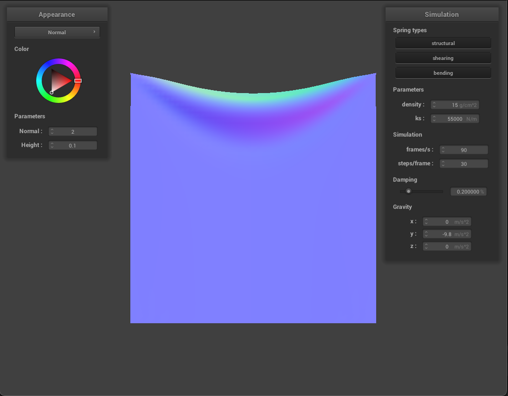
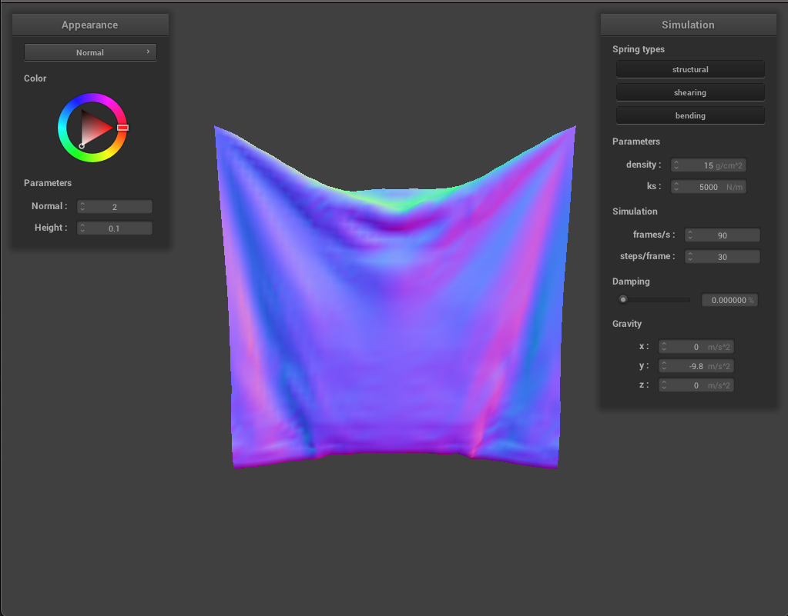
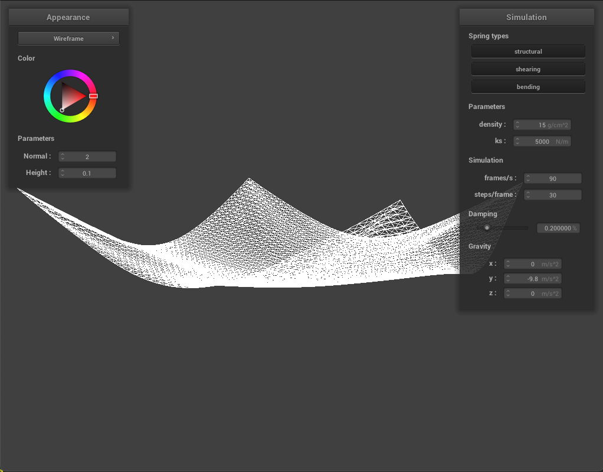
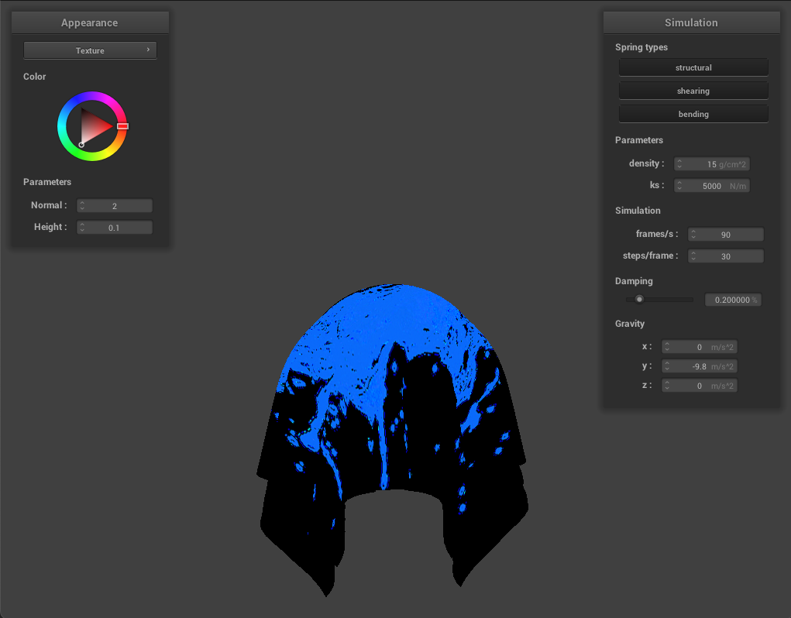

Overview
In this project, we build a simple cloth simulation and a few shading effects. We first modeled the physical
behavior of a cloth using a grid of point masses and springs. We then used numeric integration to approximate
the movement of each point masses. To calculate the total force that acts on each point masses, we considered
three sources: environment force (such as gravity), collision with other objects in the scene, collision with
the cloth itself. After this, we shifted our gear to implement shaders which renders the lighting and shading
effects for various materials. Specifically, we implemented the Blinn-Phong shading, texture mapping, bump
mapping, displacement mapping, and environment mirror reflections.
Part I: Masses and springs
|
No Shearing
|
Shearing Only
|
With All Constraints
|
Part II: Simulation via numerical integration
Varying KS
As ks increases, the center of the top edge of the cloth rests at a higher position. There are also fewer wrinkles.
This is because the amount of forces required to stretch/compress a spring by the same length increases when
ks increases.
|
ks = 55000
|
ks = 5000
|

ks = 55000
|
Varying Density
As density increases, the center of the top edge of the cloth rests at a higher position.
This is because the cloth gets lighter when density is lower, so there is less gravitational force to pull
the springs downward.
|
density = 1
|
density = 15
|
density = 900
|
Varying Damping
When damping is small, the cloth falls quickly. It also swings back and forth because no much energy is
dissipated. When damping is large, the cloth falls slowly.
|

damping = 0, step = 50
|
damping = 0.2, step = 50
|
damping = 0.99, step = 50
|
scene/pinned4.json

Part III: Handling collisions with other objects
Sphere
As we can see from screenshots below, the smaller ks is, the softer the cloth is, and the more wrinkles there
will be.
|
ks = 500
|
ks = 5000
|
ks = 50000
|
Plane
Part IV: Handling self-collisions.
Default Parameter
|
Early
|
Middle
|
|
Near Rest
|
Rest
|
Varying density
As we can see from screenshots below, smaller density has fewer folds, and larger density has more folds.
This is because smaller density means a lighter cloth, which intuitively should have fewer folds.
|
density = 1
|
density = 150
|
density = 550
|
Varying ks
As we can see from screenshots below, smaller ks has more folds, since smaller ks means softer springs,
which makes it a softer cloth.
Part V: Shaders.
task1
Shaders are independent programs that run in parallel and render the light and material. In particular, the
.vert programs apply transformation to the vertices, and feed their output (such as vertex position and normal)
to .frag programs. It also writes the final positions of the vertices to gl_Position so that the
GPU can display them on screen. The .frag program then uses the inputs passed by .vert programs and renders an
output color for the fragment.
task2
Blinn-Phong shading model is a model that combines the effects of ambient lighting, diffuse reflection, and
specular reflection to mimic the shading of real materials.
|
ambient only
|
diffuse only
|
|
specular only
|
entire Blinn-Phong model
|
task3

task4
As we can see from screenshots below, bump mapping gives us a visual illusion of uneven surface. However, if
you take a close look, the surface is still smooth. Other the hand, in addition to creating an uneven shading
effect, displacement mapping actually moves the vertices so the surface is no longer smooth.
|
Bump Cloth
|
Bump Sphere
|
|
Displacement Cloth
|
Displacement Sphere
|
As we can see from screenshots below, visual appealingness of displacement mapping is more susceptible to
mesh's coarseness change.
|
Bump o=16, a=16
|
Displacement o=16, a=16
|
|
Bump o=128, a=128
|
Displacement o=128, a=128
|
task5
|
Mirror Cloth
|
Mirror Sphere
|